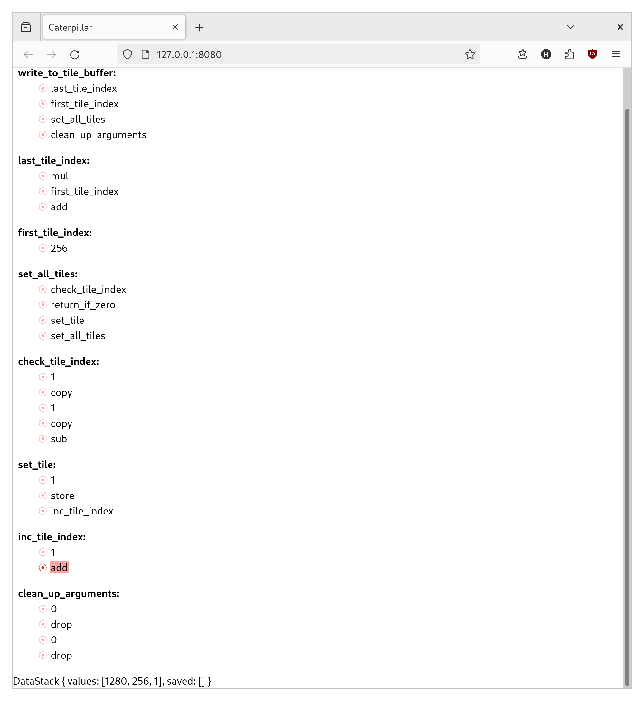

Daily Note - 2024-04-25
Hey, I'm Hanno! These are my daily notes on Crosscut, the programming language I'm creating. If you have any questions, comments, or feedback, please get in touch!
This note was published before Crosscut was called Crosscut! If it refers to "Caterpillar", that is the old name, just so you know.
The core questions I want to answer with the current prototype are a) whether building a debugger is feasible, and b) whether having one will help make an otherwise confusing language practical to use. I have some news on that first question!

This doesn't have any of the buttons you'd expect from a debugger, but you can set and remove breakpoints. And that enables you to step over, step into, or continue to wherever you want; just in the most inconvenient way possible. And you have to scroll all the time to see the information you need. But hey, it works!
It would sure be great for someone with an eye for design and a preference for frontend work to show up and save me right about now, but I guess I'm on my own for the time being. Oh well. Time to figure out if I can use this thing to make sense of that broken code I have sitting in a local branch.